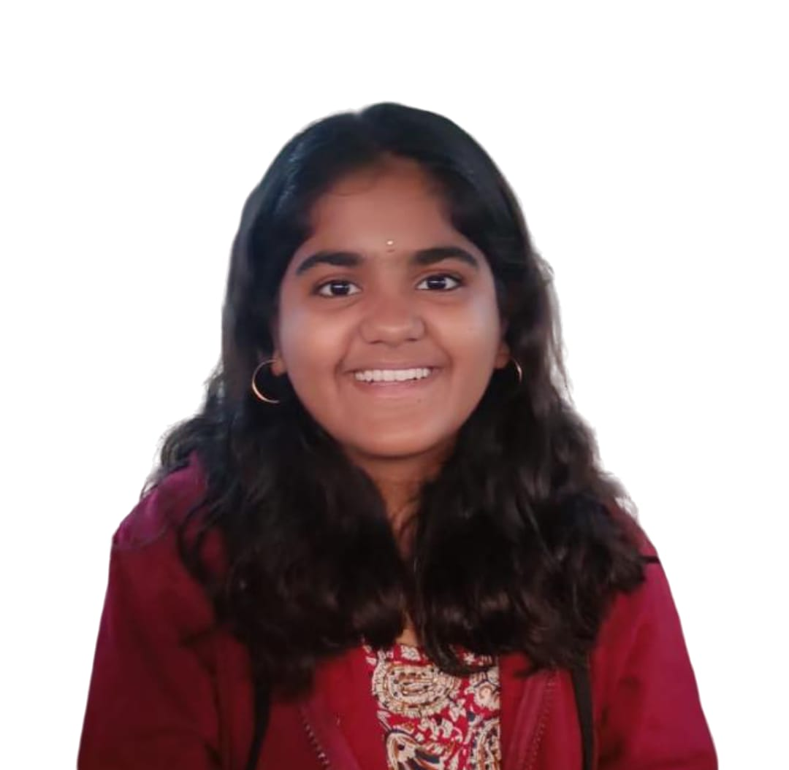

Surkanti Sai Sahasra
Bachelor of Technology in Mechanical Engineering, IIT ROPAR
2021meb1328@iitprp.ac.in
+919032281191
Education
- Bachelor of Technology Indian Institute of Technology, Ropar 7.44 (Till 5th Sem) 2021 - Present
- Senior Secondary Telangana State Board of Intermediate Education 98.4% 2021
- Secondary Board of Secondary Education,Telangana 10 2019
Projects
-
New year Resolutions Dashboard | Self Project
- Designed and implemented a New Year Resolutions dashboard using Power BI featuring individual bar
charts for the
likelihood of resolutions in different categories which include Region, Race, Gender, Age, and 2020
Vote
- Conducted an extensive analysis, identifying the top 5 resolutions for each category offering
detailed insights
-
SQL-Based Analysis of User Engagement and Content Dynamics | Self Project
- Implemented foreign key relationships for one-to-many associations in User, Video, Channel, Genre,
and User-Likes tables
- Introduced streamlined junction tables to optimize management of many-to-many relationships on a
video-sharing platform
- Analyzed the data, offering valuable insights into content strategies driving engagement and user
growth
-
Guess the number | Course Project | Prof. Sudarshan Iyengar, Dept. of Computer Science
- Developed a GUI-based application to find the hidden computer-generated number
- Applied Binary Search algorithm for efficient search and Created the GUI using Tkinter in Python
Certifications
-
SQL | 10xIITian Nxt Wave
- Got an overview of SQLite, including Querying, Aggregations & Group By, Joins, Subqueries and
Transactions &
Indexes
- Submitted many practice queries, 2 coding assignments and 2 mini projects as a part of course
-
Microsoft Power BI Desktop for Business Intelligence| Udemy
-
Got hands-on experience in Power BI with assignments & projects and learnt different stages of data
analysis
-
Python and SQL Certifications | HackerRank
- Got certified in the HackerRank skills verification test for python and SQL
Awards And Achievements
- JEE Advance 2021: Secured top 12% in JEE Advanced 2021 among 1.5 Lakh shortlisted candidates
- JEE Mains 2021: Secured top 2.2% in JEE Mains 2021 among 9.3 lakh aspiring applicants
- National Mathematics Talent Search Competition 2016: Got merit certificate for commendable performance in
the final round
- Robotics Competition by e-Yantra, IIT Bombay: Successfully selected for the hardware implementation of
PharmaBot(stage 2)
Techinical Skills
- Programming Languages: C | C++ | Python | HTML | CSS | SQL
- Libraries/Frameworks: Tkinter | Numpy | Pandas | C++ STL | OOPS | Excel | Power BI | Bootstra
- Operating Systems: Windows
Key courses taken
- CSE: Introduction to Computing and Data Structures
- Maths: Calculus | Linear algebra, Integral transforms & Special functions | Differential Equations |
Probability & Statistics
Positions of Responsibility
-
Sponsorship team member & Volunteer | Pehchaan Ek Safar, IIT Ropar
- Active member of PES, an NGO run by 100+ IIT Ropar students for the education of the underprivileged
- Taught Mathematics to 40+ underprivileged students in and around IIT Ropar by Patashala every
Thursday
- Represented the NGO and contacted Professors to acquire funds for various initiatives
-
Member | Career Development and Placement Cell, IIT Ropar Jun 2023 - Present
- Active non-core member of Career Development and Placement Cell, IIT Ropar
- Approached different companies in software and data roles for placements and internships
Miscellaneous
- Campus Mantree at GeeksforGeeks: Actively engaging with students, offering guidance, and organizing events
- 180 Degrees Consulting, IIT Madras: Participated in 6-week consult school and submitted 3 case studies as
part of the program
- National Service Scheme: Served as a Team leader of Group L at NSS, Indian Institute of Technology Ropar
- Tutor at Filo app: Helped with the doubts of the students online with 150+ one on one sessions
- Telugu Cultural Association: Active member of TCA, IIT Ropar and participated in many cultural event
My Linkedin Profile Linkedin
My projects are available at Github